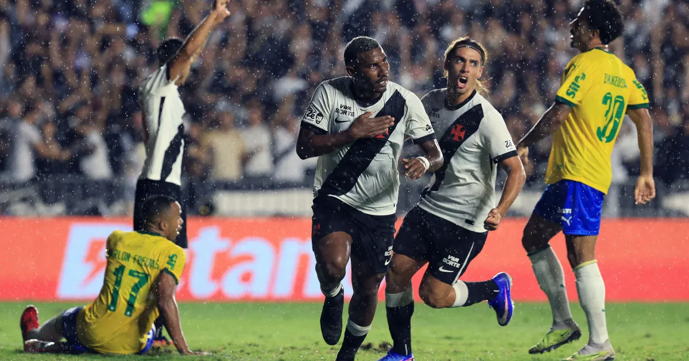
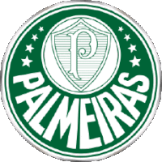

Site de notícias do palmeiras


No dia 8 de março de 2026 o time de Abel Ferreira quebrou seu jejum de mais de um ano
sem conquistar titulos conquistando então o Paulistão e deixando assim seus torcedores
felizes novamente e seus rivais com inveja.

O idolo do palmeiras Raphael Veiga teve sua anunciação no time América MEX
no dia 03/02 de 2026, deixando muitos torcedores tristes, porem deixando o eterno
legado de pai do corinthians

Torcedores da septt levantam uma nova # sendo ela "#tequieromutchoflaquito"
após muitas mitadas do jogador flaco lopez no decorrer das temporadas
alguns torcedores ja afirmam que ele é um idolo.

Jogador Andreas do palmeiras alegrou os torcedores
do time após arrastar o pé na marca do penalti em noite de Derby
e alegar estar apenas limpando a chuteira, sua atitude levou ao escorregão de Dephay que errou o penalti.

Na noite de sexta feira torcedores do alviverde tiveram
a tristeza de ver uma derrota de virada para o vasco
após o apito final torcedores questionam se Abel Ferreira tem mesmo
que permanecer no palmeiras.
Carlos Miguel
(Goleiro)
Vitor Roque
(Atacante)
Flaco Lopez
(Atacante)
Allan
(Atacante)
Marlon Freitas
(Meio campo)
Andreas Pereira
(Meio Campo)
Jhon Arias
(Meio-Campo)
Khellven
(Defesa)
Gustavo Gomez
(Defesa)
Piquerez
(Defesa)
Bruno Fuchs
(Defesa)
